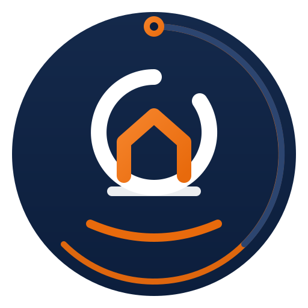
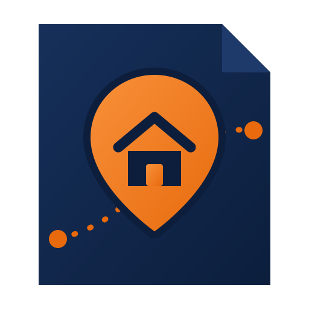
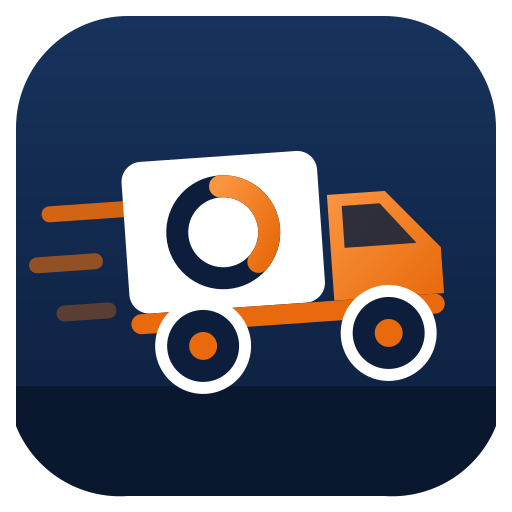

Вектор, палитра сайта: тёмно-синий #0C1E3C и оранжевый #E86A0C. Каждый показан крупно, в шапке на светлом и тёмном фоне и в 28 px — как он будет выглядеть во вкладке браузера.
Круглая печать. Кольцо разорвано снизу и подхвачено оранжевой дугой — дорога, а не статичный круг. Внутри монограмма O + M, где перемычка M собрана из двух скатов крыши: старый адрес и новый. Сверху — точка отправления, тот самый origin.

Метка на карте, внутри — дом. Через знак проходит пунктирный маршрут из точки A в точку B, он выходит за пределы подложки, поэтому логотип читается как движение. Срезанный верхний угол подложки — отсылка к коробке.

Грузовик в профиль, собранный на одном радиусе скругления. В кузове читается буква O — и груз, и первая буква названия. Кабина оранжевая, наклон 4° и три линии скорости задают движение вправо, к новому адресу.

Все три — вектор (SVG): масштабируются без потери качества, годятся и на визитку, и на борт грузовика. Скажите номер — поставлю его в шапку сайта, в подвал, на страницу «Спасибо» и пересоберу иконки вкладки. Любой вариант можно доработать: изменить пропорции, убрать или добавить деталь, сделать одноцветную версию для печати.